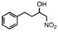
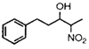
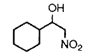
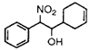
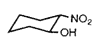

Abstract
The sonochemical promoted aluminum amalgam reduction of 2-nitroalkanols provides an improved yield and accelerated conversion to the corresponding amino alcohols when compared to the non-ultrasound (benchtop) reductions. The appearance of byproduct hydroxylamines is minimized during the ultrasound promoted reaction. The product amino alcohols were conveniently acylated in situ with promotion by ultrasound thus affording the N-acyl derivatives in the same operation.
The importance of amino alcohols as synthetic intermediates together with their biological significance is widespread2. In the case of 2-amino alcohols the corresponding 2-nitroalkanols may serve as the usual precursors to these compounds through selective reduction of the nitro group. While many methods for the reduction3 of the nitro group exist, each has limitations; therefore useful alternatives based on the desired selectivity, efficiency or expense will always be embraced. We are interested in ultrasound-promoted organic transformations in which reactivity is enhanced by sonochemical activation4 of insoluble reactants, catalysts, adsorbents or the generation of highly reactive microdispersions.
Our experiences with the ultrasound (US)-enhanced aluminum amalgam (Al/Hg) reduction of phthalimides5 led us to examine its effectiveness in the reduction of 2-nitroalkanols (Eq 1)6.
Table 1.
Al/Hg Reductions of 2-Nitroalkanolsd
Substratea |
BT |
US |
||
Time |
Yieldb |
Time |
Yieldb |
|
|  | 19 h |
77% |
2 h |
92% |
|  | 16 h |
54% (65%)c |
2 h |
70% |
|  | 5 h |
73% (74%)c |
2 h |
77% |
|  | 22 h |
47% (46%)c |
2 h |
64% |
|  | 23 h |
43% |
2 h |
54% |
Notes:
- Substrates were used as
diastereomeric mixtures. - Unless otherwise indicated, the
amino alcohols were isolated as
their N-benzoyl derivatives. - Isolated yield of amino alcohol.
- All new substrates and products
gave satisfactory 1H NMR, 13C NMR,
IR spectra and elemental analysis.
During a US-promoted Al/Hg reduction a highly reactive microdispersion is generated by shock wave-induced primary fragmentation together with the mass transport between the amalgam panicles and the solution of the substrate being increased by cavitation-induced turbulent flow7. As a result of applying the US-promoted Al/Hg method to 2-nitroalkanols. we report herein an inexpensive, rapid and mild method for the reduction of these substrates to the corresponding amino alcohols under the influence of ultrasound irradiation. 2-Nitroalkanols, conveniently obtained by the Henry reaction of aldehydes and nitroalkanes8, were subjected to sets of conditions involving ultrasound (US)-promoted and non-ultrasound (benchtop, BT) conditions. Overall the US-promoted reactions displayed improved yields over the benchtop cases together with a maximum 11-fold decrease in reaction time (Table 1)9.
Since the concomitant reduction of water, the proton source for both BT and US cases, is also accelerated, the ultrasound cases required twice the equivalents of amalgam for complete consumption of starting material. In all cases the presence of the intermediate hydroxylamines were detected; however, conditions were such that complete reduction to the desired amino alcohols was the predominant reaction.
We anticipated that the ultrasonic irradiation together with the increasing basicity of the reaction mixture would contribute toward enolization; however, the treatment of 2-nitrocyclohexanol with aluminum amalgam under US conditions in the presence of deuterium oxide provided no 2-amino-2-deuteriocyclohexanol. The mildly basic nature of the reaction mixture facilitates acylation of the amino group with acid chlorides or anhydrides after the reduction is complete so that the amino alcohols may be isolated as their N-benzoyl or N-acetyl derivatives as a result of a one-step process. Using enones or aryl halides as substrates and zinc or metal hydrides as reducing agents under heterogeneous conditions, Boudjouk10 and Luche11 have reported significant rate enhancements and improvements in yield as a result of ultrasound-promotion. Of note are the conjugate hydrogenations of Luche12 which employ zinc metal under aqueous heterogenous conditions. As in the aluminum amalgam reduction such processes may involve the cavitation-induced generation of a microdispersion with simultaneous sonochemical activation. Application of high-intensity ultrasound to other types of reactions characterized by heterogeneity are currently under study in our laboratory and will be a topic of future reports.
Experimental
General
Analytical and chromatographic methods used were as previously described4. Ultrasound was generated with a Sonies and Materials Vibra CellTM Model VC 300 power supply and titanium microtip probe. The ultrasound-promoted reactions were run in a 200 mL cylindrical Pyrex jacketed vessel and cooled with a VCR Scientific 1140 constant temperature bath.
Preparation of 2-nitroalkanols
Nitroalkanols were prepared by nitro-aldol (Henry) reaction of the respective aldehyde (5 mmol) with the corresponding nitroalkane (25 mmol) in the presence of tetramethylguanidine (0.25 mmol) in THF (5 mL). When TLC (hexanes/ethyl acetate, 4:1) indicated consumption of the aldehyde, the reaction mixture was concentrated in- vacuo to yield a syrup which was gravity chromatographed to afford the nitroalkanol. Trans-2-nitrocyclohexanol was prepared by the reaction of silver nitrite (30 mmol) with cyclohexene oxide (15 mmol) in DMSO/toluene (1:1 v/v 30 mL) at 100°C.
Benchtop (BT) Reduction of Nitroalkanols
Food grade aluminum foil (2.5 mmol) was cut into strips (6x50 mm) and spirally wound about a glass stirring rod (6 mm dia.) to prepare coils. The coils were soaked in diethyl ether to remove machining oils and amalgamated individually by immersion (20 sec) in an agitated solution of aqueous mercury(II)chloride (2%) using forceps. After amalgamation the prepared coil was washed by immersion in agitated diethyl ether (5 sec) and immediately added to a THF (5 mL) solution of nitroalkanol (0.5 mmol) and water (7.5 mmol). The reaction is stirred under nitrogen until TLC (CHCl3/MeOH, 9:1) indicates consumption of starting material (high Rf, yellow spot - ninhydrin) and intermediate hydroxylamine (lower Rf, pink spot - ninhydrin) to yield amine (lowest Rf, red spot - ninhydrin).
Once the reaction was complete (12-24 h), the grey suspension was filtered through a pad (1 cm) of Celite in a fritted glass funnel (30 mm, 60 mL, medium porosity) and the filter cake was washed with THF (3x10 mL) and methanol (10 mL). The filtrate was concentrated to a colorless to pale yellow oil and flash chromatographed to afford the amine.
Ultrasound-Promoted (US) Reduction of Nitroalkanols
Aluminum amalgam (5 mmol) prepared as described above was added to the cooled reaction vessel (25°C) containing THF (5 mL), nitroalkanol (0.5 mmol) and water (2.5 mmol). The ultrasonic probe was immersed below the liquid surface (1 cm) and activated (power level = 3). Sonication was continued with addition of water (2.5 mmol) at 10 min intervals until 15 mmol had been added. Total sonication time was 1.5 hr at which time TLC indicated near complete conversion to amine and the aluminum coils were completely pulverized. The resultant thick grey slurry was then filtered as previously described or acylated.
In-situ BT Acylation
When the reaction was judged complete by TLC, benzoyl chloride (0.55 mmol) was added via syringe and the reaction was stirred under nitrogen (1 h) at which TLC showed consumption of the amine and formation of the benzamide (high Rf, tan spot - ninhydrin). Workup of the reaction was the same as previously described except that chromatography was done using hexanes/ethyl acetate.
In-Situ US Acylation
The thick slurry was diluted with additional THF (5 mL) and benzoyl chloride (0.55 mmol) was added via syringe. Ultrasound was reapplied (30 min), at which time TLC indicated consumption of the amine. Workup was as previously described.